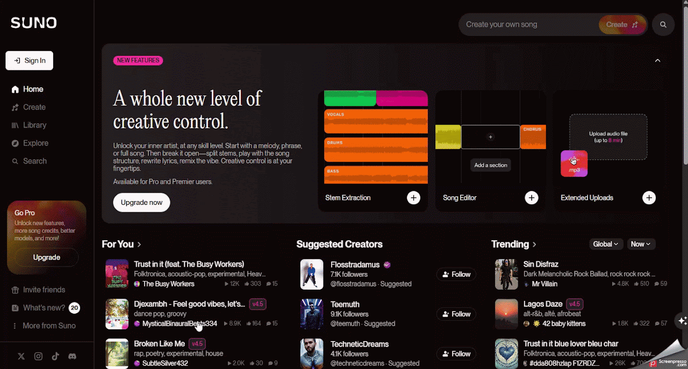
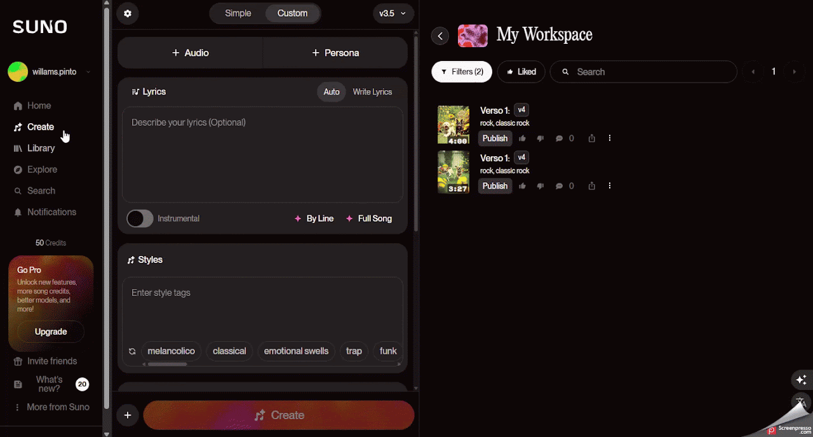

Suno AI
Auxiliar o professor na criação de músicas personalizadas para reforçar conteúdos curriculares de forma lúdica e envolvente.
Ficha técnica
Visão geral
O que é o Suno AI?
O Suno AI é uma ferramenta de geração de músicas baseada em inteligência artificial que transforma descrições textuais (prompts) em composições musicais completas, incluindo letra, melodia, instrumentação e vocais. A plataforma é acessível tanto para iniciantes quanto para profissionais, oferecendo uma maneira simples de criar músicas originais sem a necessidade de conhecimentos técnicos avançado.
Fluxo de uso
Como utilizar o Suno AI
Etapa 1
Criando uma Conta Gratuita
- Acesse o site oficial: https://suno.com.
- Clique em "Sign Up", No canto superior direito da página inicial.
- Escolha o método de cadastro, você pode se registrar usando contas do Google, Discord, Microsoft ou Apple.
- Complete o processo de inscrição, siga as instruções para finalizar o cadastro e acessar a plataforma.

Etapa 2
Criando Sua Música com o Suno AI
- Inicie a Criação:
- Após o login, clique em "Create" no menu lateral esquerdo para começar uma nova música.
- Escolha o Modo de Criação:
- Modo Simples: Ideal para iniciantes. Basta inserir uma breve descrição da música que deseja criar, e o Suno AI gerará a canção automaticamente.
- Modo Personalizado: Permite maior controle sobre a criação. Você pode inserir letras específicas, escolher o estilo musical, o título da música e outras preferências.
- Descreva Sua Música:
- No campo de descrição, insira detalhes sobre o estilo, humor, tema ou qualquer outra característica que deseja na música. Por exemplo: "Uma balada romântica com piano suave e vocais femininos emocionantes".
- Personalize (Opcional):
- Inserir letras: Adicione suas próprias letras para a música.
- Selecionar o estilo musical: Escolha entre diversos gêneros, como pop, rock, jazz, eletrônico, entre outros.
- Definir o título da música: Dê um nome à sua criação.
- Gere a Música:
- Clique em "Create" para que o Suno AI processe suas entradas e gere a música. O processo pode levar alguns minutos.

Etapa 3
Baixando e Compartilhando sua Música
- Ouça as Versões Geradas: O Suno AI geralmente cria duas versões da música. Ouça ambas e escolha a que preferir.
- Baixe a Música: Clique nos três pontos ao lado da faixa escolhida e selecione "Download" para salvar a música em formato MP3.
- Compartilhe: Você pode compartilhar sua criação diretamente em plataformas como YouTube, TikTok ou Instagram.